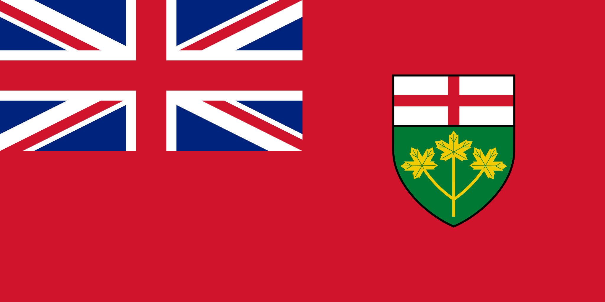

Some Canadian Provinces |
|||||
|---|---|---|---|---|---|
| Provinces | Quebec | Ontario | Alberta | Nova Scotia | |
| Flag |  | ||||
| Capital | Quebec City | Toronto | Edmonton | Halifax | |
| Postal Abbreviation | QC | ON | AB | NS | |
| Year Entered Confederation | July 1, 1867 | July 1, 1867 | September 1, 1905 | July 1, 1867 | |
| More info available on Wikipedia | |||||